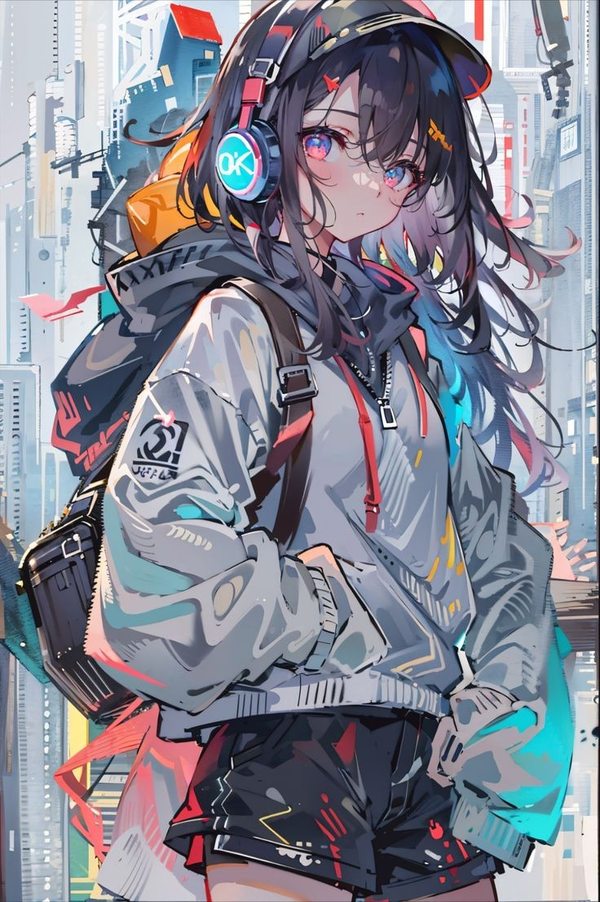
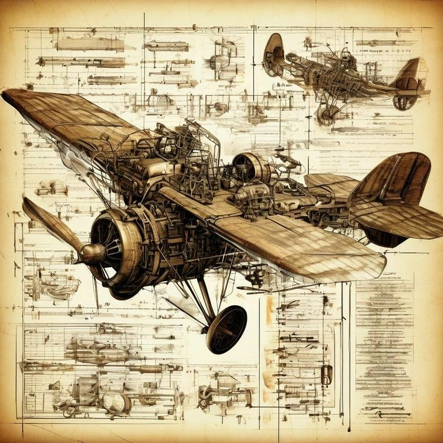

Welcome to
卜卜生机挑战队
点击观看视频
Low Efficiency of Manual Harvesting
我国胡萝卜种植区域分布广而散,收获时人工劳动强度大，收获成本高，收获效率低
Challenges in Matching Foreign Machinery
国外种植模式与我国存在差异，国外的收获机械并不能满足我国的农业要求
胡萝卜收获机械的创新迫在眉睫 ！！！
Innovations in Carrot Harvesting Machinery Are Urgently Needed !！！
胡萝卜收获机
这是一款集挖掘、搬运、切削、捆包等功能于一体的高效设备。它以高度自动化和小型化设计，在提升作业效率的同时，确保每一个胡萝卜都得到精心采摘。
欢迎了解这款卓越的胡萝卜收获机，它能够有效地完成从收割到包装的全过程。
这种创新设备将为现代农业带来前所未有的便利与高效，真正做到节省人力，提升产量。
Welcome to explore the innovative carrot harvester, a device that streamlines the entire process from harvesting to packaging.
It will bring unprecedented efficiency to modern agriculture, saving labor and boosting yield.
这种创新设备将为现代农业带来前所未有的便利与高效，真正做到节省人力，提升产量。
Welcome to explore the innovative carrot harvester, a device that streamlines the entire process from harvesting to packaging.
It will bring unprecedented efficiency to modern agriculture, saving labor and boosting yield.
胡萝卜收获机
机械创新
我们的团队致力于为农业生产带来更高效更智能的解决方案
Carrot Harvesting Machine, Mechanical Innovation
The Bubushengji team is dedicated to developing an automatic carrot harvesting machine. This equipment efficiently handles the entire process from digging to packaging, featuring high automation, multifunctionality, and compact design. It stands as a symbol of future agricultural mechanical innovation.

